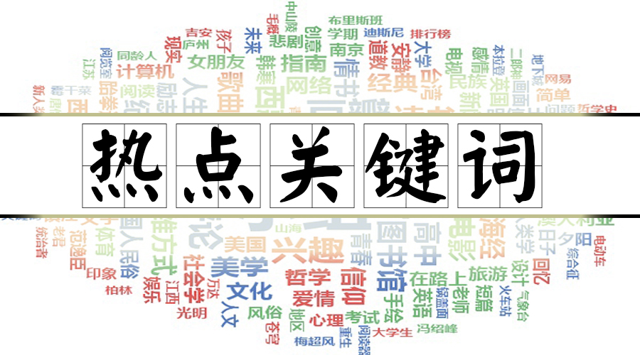
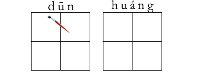
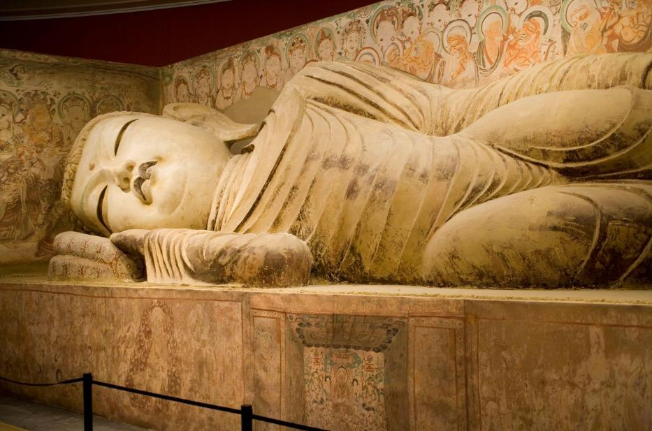

关注我们


版权所有 © 2016 网络孔子学院
京ICP备13044591号 京ICP证140531号
网络视听许可证0109385号

2016-11-28阅读（17,669）


据媒体报道，“丝路之魂——敦煌艺术大展暨天府之国与丝绸之路文物特展”在四川成都博物馆开幕。本次展览将持续到2017年4月10日。此次展览是国内迄今为止最大规模的以丝绸之路为主题的敦煌艺术大展，敦煌石窟、龟兹石窟、高昌石窟、麦积山石窟壁画及彩塑，以及来自丝绸之路沿线的全国50余家重量级博物馆及文保机构的150余件馆藏文物精品集体亮相。

新词速递words
敦煌 dūn huáng
敦煌石窟 Dūn huáng shí kū
龟兹石窟 Qiū cí shí kū
高昌石窟 Gāo chāng shí kū
麦积山 mài jī shān
石窟壁画 shí kū bì huà
彩塑 cǎi sù
文化课堂culture
【天府之国是何处？】
四川享有天府之国的美誉，通过蜀道陆路和长江水路，沟通了陆上和海上丝绸之路，向三条丝路输送了大量丝绸产品及漆器、铜器、铁器等手工业产品，与三条丝路的繁荣发展相辅相成。
【四大石窟】
四大石窟指的是以中国佛教文化为特色的巨型石窟艺术景观，包括：莫高窟（甘肃敦煌）、云冈石窟（山西大同）、龙门石窟（河南洛阳）、麦积山石窟（甘肃天水），是中国古代汉族传统文化艺术的历史瑰宝。
【莫高窟】
莫高窟是现存规模最庞大的“世界艺术宝库”，莫高窟艺术的特点表现在建筑、塑像和壁画三者的有机结合上。窟形建制分为禅窟、殿堂窟、塔庙窟、穹隆顶窟、影窟等多种形制；彩塑分圆塑、浮塑、影塑、善业塑等；壁画类别分尊像画、经变画、故事画、穹隆顶窟佛教史迹画、建筑画、山水画、供养画、动物画、装饰画等不同内容，系统反映了十六国、北魏、西魏、北周、隋、唐、五代、宋、西夏、元等十多个朝代及东西方文化交流的各个方面，成为人类稀有的文化宝藏。
【云冈石窟】
云冈石窟的造像气势宏伟，内容丰富多彩，堪称公元5世纪中国石刻艺术之冠，被誉为中国古代雕刻艺术的宝库。按照开凿的时间可分为早、中、晚三期，不同时期的石窟造像风格也各有特色。早期的“昙曜五窟”气势磅礴，具有浑厚、纯朴的西域情调。中期石窟则以精雕细琢，装饰华丽著称于世，显示出复杂多变、富丽堂皇的北魏时期艺术风格。晚期窟室规模虽小，但人物形象清瘦俊美，比例适中，是中国北方石窟艺术的榜样和“瘦骨清像”的源起。此外，石窟中留下的乐舞和百戏杂技雕刻，也是当时佛教思想流行的体现和北魏社会生活的反映。云冈石窟是石窟艺术“中国化”的开始。云冈中期石窟出现的中国宫殿建筑式样雕刻，以及在此基础上发展出的中国式佛像龛，在后世的石窟寺建造中得到广泛应用。云冈晚期石窟的窟室布局和装饰，更加突出地展现了浓郁的中国式建筑、装饰风格，反映出佛教艺术“中国化”的不断深入。
【龙门石窟】
龙门石窟是北魏、唐代皇家贵族发愿造像最集中的地方。皇室贵族拥有雄厚的人力、物力条件，他们所主持开凿的石窟必然规模庞大，富丽堂皇，汇集当时石窟艺术的精华，因而龙门石窟是十分具有代表性的。这些洞窟的开凿是皇家意志和行为的体现，具有浓厚的国家宗教色彩。
【麦积山石窟】
麦积山石窟的一个显著特点是洞窟所处位置极其惊险，大都开凿在悬崖峭壁之上，洞窟之间全靠架设在崖面上的凌空栈道通达。游人攀登上这些蜿蜒曲折的凌空栈道，不禁惊心动魄。麦积山的塑像有两大明显的特点：强烈的民族意识和世俗化的趋向。除早期作品外，从北魏塑像开始，差不多所有的佛像都是俯首下视的体态，都有和蔼可亲的面容，虽是天堂的神，却象世俗的人，成为人们美好愿望的化身。从塑像的体形和服饰看，也逐渐在摆脱外来艺术的影响，体现出汉民族的特点来。